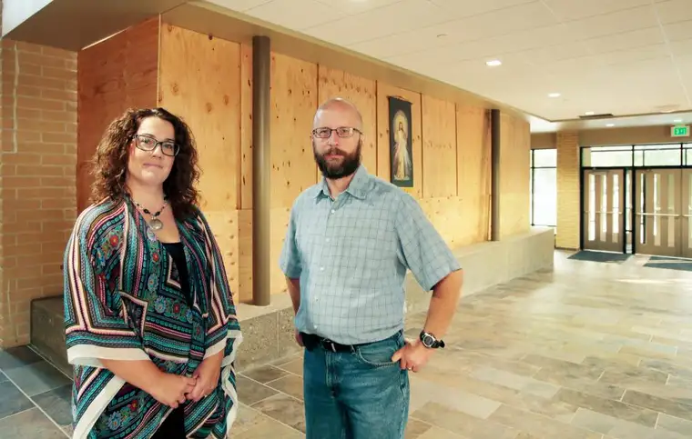

FARGO — The call about the vandalism went to Frank Lalonde’s home phone as he was heading to work as office manager of Nativity Church the morning of Aug. 4. En route, he missed the warning of what he’d soon witness.
Arriving at the sacred place he knows so well, he was met by a parishioner with worry lines on her face. “There’s a bit of damage to the building,” she’d said.
“When I opened the door, I was greeted by a sea of glass down the hallway,” Lalonde recalls. “The parishioners were standing there in shock and awe.”
Their natural inclination, he says, was to start cleaning, but they had to be subdued. “Not only was it not safe, but we wanted the police involved to investigate.”
Just hours earlier, in the dark of night, vandals had climbed onto the roof of the building, which houses both a church and elementary school, and hurled rocks through 37 windows, leaving shards of shining, sharp glass everywhere.
The security cameras were not positioned to get a clear view, bringing questions over who’d done it and why.
Rev. Kevin Boucher, on his day off, had invited a visiting priest to preside over the early weekday Mass that morning. Despite the destruction and distraction, Mass — including prayers for the vandals — proceeded.
Boucher spent the day processing the situation, talking with law enforcement and working toward helping the parish and school heal.
Though relieved it hadn’t been worse, he says, feelings of violation crept in. “I wouldn’t use ‘PTSD’ but I can certainly relate now … I have this frequent looking-over-the-shoulders at night, wondering, will they come back?”
But other emotions also came. “There was just a profound sadness that someone’s heart is so wounded that they would do something like this,” he says. “I wondered what their life story is, and why they would do this. Also, there was a concern for them.”
He’s been touched by the acts of kindness — notes from people with no previous connection to the parish, cards with money to aid cleanup, but even more importantly to him, offers of prayer.
“Their hearts were moved in compassion for us; there was that awareness that they were suffering with us,” he says.
Pat Callens, parishioner, says upon hearing the news from afar, her heart dropped to think of the church plants she cares for regularly filled with glass.
“Everything was boarded up when I came back … it was unreal,” she says, noting that she’s been praying for the perpetrators.
Kimbra Amerman, newly-named Nativity school principal, was on a family outing in the Twin Cities when the call came. Though shaken, she quickly went into recovery mode.
“I knew I was going to have to move (some of) my teachers … everything that had fabric was embedded with glass,” she says, noting, “We were dragging glass on our shoes if we went near (affected rooms).”
Lauren Kessler, one of three displaced teachers and a former Nativity student, took the news especially hard.
“In the beginning, it was like, this is like my home … how can someone destroy my home?” she says. But eventually, she turned to prayer. “At a staff meeting, we prayed for (the vandals), and I felt like we were more of a community through this, even more than in the past.”
She adds, “I also realized it didn’t matter if my bulletin boards weren’t perfect. It just mattered that the kids were safe and comfortable.”
Kimbra says the church offered extra spaces, and the art and music teachers gave up their rooms temporarily. For a week, Kessler shared a classroom with the other first-grade teacher, and encouraged her students to see it as a fun, short-term bonus.
“We had ‘art on a cart,’ ” Kimbra notes, adding that her background in counseling helped her address the teachers’ anxieties. “I talked about being flexible and focusing on the positive.”
She also wrote a letter to families to prepare them. “The school and safety of the kids was top priority,” she says. “It’s stressful enough those first weeks of school without having to be displaced and not having your scissors or pens…”
When school started Aug. 22, she says, “We came through with flying colors.”
Kimbra has let thoughts of the vandalism itself enter her mind only briefly.
“I try to think about the whole picture, how if they would have known better, they would have done better,” she says. “I think the students and staff are stronger because of it. It showed the goodness of our community, and I won’t give it another thought. I’m amazed at what we did in that month.”
Lalonde, too, sees the bigger picture. “It’s easy to fix a broken window. It’s a different thing to fix a person,” he says.
Despite this and other major changes the school has undergone this year, with new staff and families, Boucher says, “It’s still the Nativity school we’ve always had through the recent decades.”
[For the sake of having a repository for my newspaper columns and articles, I reprint them here, with permission, a week after their run date. The preceding ran in The Forum newspaper on Sept. 9, 2017.]